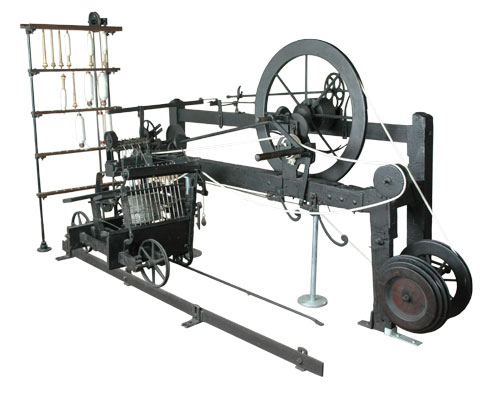

Important technological developments
The commencement of the Industrial Revolution is closely linked to a small number of innovations,[27] beginning in the second half of the 18th century. By the 1830s the following gains had been made in important technologies: Textiles – mechanised cotton spinning powered by steam or water increased the output of a worker by a factor of around 500. The power loom increased the output of a worker by a factor of over 40.[28] The cotton gin increased productivity of removing seed from cotton by a factor of 50.[22] Large gains in productivity also occurred in spinning and weaving of wool and linen, but they were not as great as in cotton.[1] Steam power – the efficiency of steam engines increased so that they used between one-fifth and one-tenth as much fuel. The adaptation of stationary steam engines to rotary motion made them suitable for industrial uses.[1]:82 The high pressure engine had a high power to weight ratio, making it suitable for transportation.[23] Steam power underwent a rapid expansion after 1800. Iron making – the substitution of coke for charcoal greatly lowered the fuel cost of pig iron and wrought iron production.[1]:89–93 Using coke also allowed larger blast furnaces,[29][30] resulting in economies of scale. The steam engine began being used to pump water and to power blast air in the mid 1750s, enabling a large increase in iron production by overcoming the limitation of water power.[31] The cast iron blowing cylinder was first used in 1760. It was later improved by making it double acting, which allowed higher blast furnace temperatures. The puddling process produced a structural grade iron at a lower cost than the finery forge.[32] The rolling mill was fifteen times faster than hammering wrought iron. Hot blast (1828) greatly increased fuel efficiency in iron production in the following decades. Invention of machine tools – The first machine tools were invented. These included the screw cutting lathe, cylinder boring machine and the milling machine. Machine tools made the economical manufacture of precision metal parts possible, although it took several decades to develop effective techniques.[33